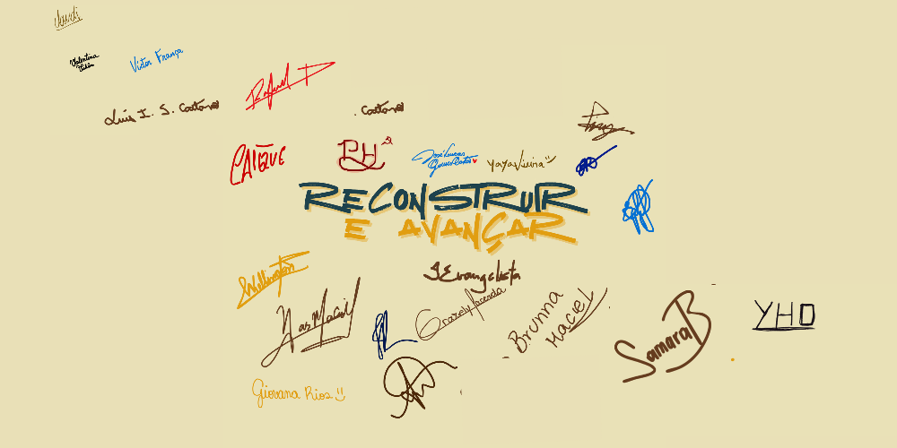

ELEIÇÕES 20 E 21 DE MAIO
DO SERTÃOAO LITORAL
RECONSTRUIR E AVANÇAR
RECONSTRUIR E AVANÇAR
Estudantes Matriculados
Estudantes em Tempo Integral
Restaurantes Universitários
O Movimento Do Sertão ao Litoral une estudantes de Arcoverde ao Recife. Somos a voz de quem luta por uma UPE verdadeiramente democrática.
Pela permanência de quem faz a melhor estadual do Norte-Nordeste.

"A universidade abre as portas, mas o nosso movimento garante que você consiga se formar."